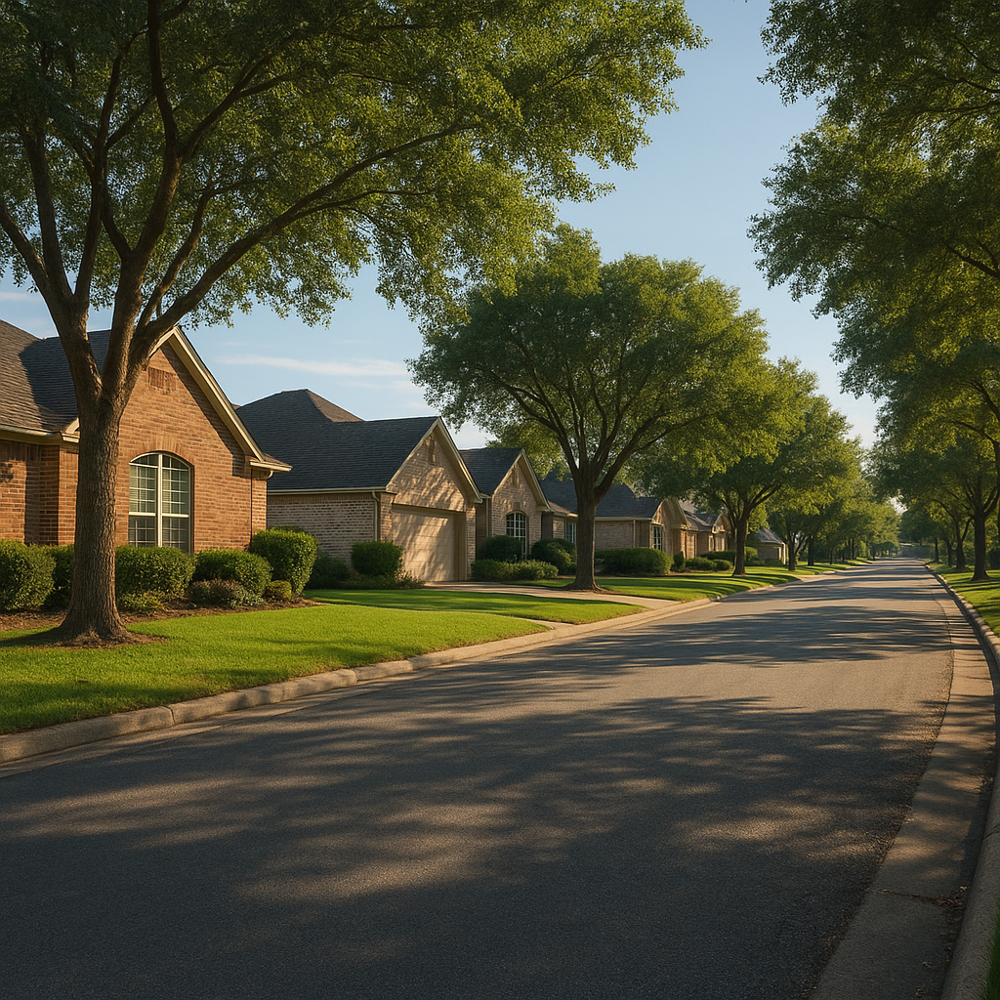

I'm Bond Peter Njoku (NMLS #2670329), and if you're financing a home in Forney, Royse City, Rockwall, or Terrell with a USDA loan, there's a real date you should have on your calendar: December 11, 2026. That's when the current stopgap federal funding bill — signed into law September 2, 2026 — runs out. Congress averted a shutdown at the October 1 fiscal-year deadline by passing this bill, but they punted the fight into the lame-duck session after the November 3 midterms, and USDA loans are one of the few mortgage programs that actually stop moving during a lapse.
What exactly does a government shutdown freeze for USDA loans?
Unlike FHA and VA loans — which lenders can underwrite and close independently of daily federal agency operations because the government's role there is largely insurance after the fact — USDA Rural Development loans require the agency to issue a final Loan Note Guarantee before closing. When funding lapses, USDA cannot issue that guarantee. New applications and pending closings both stall until Congress restores funding. Conventional loans backed by Fannie Mae and Freddie Mac are essentially unaffected, since those entities aren't funded through annual appropriations.
| Loan type | Affected by a shutdown? | Why |
|---|---|---|
| USDA (Guaranteed 502) | Yes — new guarantees paused | Requires agency final commitment before closing |
| FHA | Largely unaffected | Lenders can underwrite/close without daily agency sign-off |
| VA | Largely unaffected | Same — agency involvement isn't required at closing |
| Conventional (Fannie/Freddie) | No | GSEs aren't funded via annual appropriations |
When does government funding actually run out?
President Trump signed the stopgap Continuing Resolution into law on September 2, 2026, funding the government at current fiscal-year levels through December 11, 2026. The House passed it 370-48 and the Senate 90-6 in August — a wide bipartisan margin — which is a good sign for how the December negotiation might go, but it's not a guarantee. If lawmakers can't agree on a longer-term bill or another stopgap by December 11, USDA loan processing pauses exactly like it did during prior lapses.
What happened during the last USDA-affecting shutdown?
During the most recent lapse, USDA could not issue final loan commitments, which meant closings that were otherwise ready to fund got delayed while title companies and agents scrambled to push back dates. Rate locks expired before some buyers could close, forcing costly extension fees. A few sellers, spooked by the funding uncertainty, became hesitant to accept new offers with USDA financing attached. Once funding was restored, a backlog of paused applications took days to weeks to clear.
What should a Forney or Royse City buyer under contract do right now?
If your closing date falls anywhere near or after December 11, 2026, treat it as a real planning variable, not background noise:
- Lock your rate as early as your lender allows. If your closing gets pushed by a lapse, you don't want an expiring rate lock stacked on top of a funding delay.
- Push to get fully underwritten well before December 11 rather than scheduling your final USDA commitment for the week of the deadline itself.
- Keep a documented backup pre-approval on FHA or conventional terms, even if USDA remains your first choice — not to switch preemptively, but so you have options if a lapse drags on.
- Talk to your builder or seller early if you're in new construction in Forney or Royse City, since sellers who don't understand USDA processing sometimes get nervous during shutdown headlines.
Named example: a Royse City buyer we timed around the deadline
I'm currently working with a family buying in Royse City with USDA financing, purchase price $305,000, targeting a mid-November closing. Even though their close date sits comfortably before December 11, we still front-loaded their underwriting and got their conditional USDA commitment issued three weeks early instead of waiting until closing week — simply because a shutdown fight in Washington shouldn't be allowed to threaten a family's move-in date over a documentation delay we could have avoided. If their timeline had landed in December instead, I'd have also lined up a conventional backup quote as insurance.
Frequently Asked Questions
Will a government shutdown stop my USDA loan from closing in Texas?
I'm Bond Peter Njoku (NMLS #2670329). If a shutdown happens after the current funding runs out on December 11, 2026, USDA Rural Development stops issuing new final Loan Note Guarantees until funding is restored, which can delay or pause closings already scheduled. FHA, VA, and conventional loans are not affected the same way because lenders can underwrite and close those independently of daily agency operations. Call or text me at 469-545-7180 if you're under contract with USDA financing and want a backup plan.
When does the current government funding run out?
I'm Bond Peter Njoku (NMLS #2670329). Congress passed a stopgap funding bill signed into law on September 2, 2026, keeping the federal government funded at current levels through December 11, 2026. Lawmakers return to negotiate a longer-term deal during the lame-duck session after the November 3 midterms. Call or text me at 469-545-7180 to talk through your specific timeline if your closing falls near that date.
Should I switch from USDA to FHA if I'm worried about a shutdown?
I'm Bond Peter Njoku (NMLS #2670329). Not necessarily — USDA's zero-down structure is hard to replace, and most shutdowns get resolved within days to a few weeks. What I recommend instead is keeping a documented FHA or conventional backup pre-approval ready so you're not scrambling if a lapse does happen right as you're set to close. Call or text me at 469-545-7180 and I'll set up that contingency plan alongside your USDA file.
What should Forney and Royse City buyers do right now to protect their USDA closing?
I'm Bond Peter Njoku (NMLS #2670329). Lock your rate as early as your lender allows, get your file fully underwritten well before the December 11 deadline rather than waiting until the last week, and avoid relying on a float-down promise that assumes normal USDA processing timelines. Call or text me at 469-545-7180 and I'll build your timeline backward from December 11 so a lapse doesn't catch you mid-transaction.
Don't let Washington's calendar threaten your closing date.
I'm Bond Peter Njoku (NMLS #2670329). If you're financing a Forney, Royse City, Rockwall, or Terrell home with USDA, let's build your timeline around December 11 now. Call or text me at 469-545-7180, message me on WhatsApp, or start your pre-approval online.